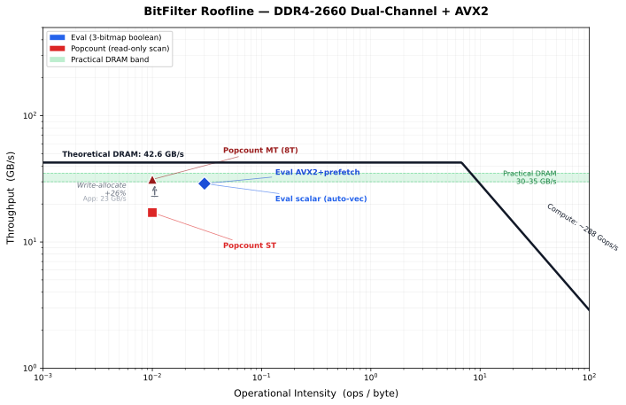

(columnar OLAP database)
1. The Problem
Ad-tech platforms segment audiences into boolean categories: "US users,"
"mobile users," "purchased in the last 30 days." A single campaign
targets the intersection: A AND B AND NOT C. At 500 million users,
that query touches hundreds of megabytes of data.
The question is simple: how fast can you evaluate a boolean bitmap query over half a billion users? The answer depends entirely on how close your code gets to the hardware's physical limits.
2. Why Bitmaps
A bitmap assigns one bit per user. To check if user #42,000,000 is in a segment, read bit 42,000,000. No B-tree traversal, no hash lookup, no pointer chasing. The entire 500M-user segment fits in 62.5 MB — small enough to stream through the CPU at memory-bandwidth speed.
Boolean logic maps directly to hardware instructions. A AND B becomes a
single bitwise AND on a 64-bit word, evaluating 64 users simultaneously. With AVX2,
that's 256 users per instruction. The CPU's ALU finishes the math before DRAM can
deliver the next cache line.
Dense vs. Compressed: The Tradeoff
| Property | Dense Bitmap (BitFilter) | Compressed (Roaring) |
|---|---|---|
| Speed (high density) | Fastest — no logic overhead | Slower — container dispatch |
| Speed (low density) | Slow — scans empty space | Fastest — skips empty |
| Memory per segment | Fixed 62.5 MB | Proportional to data |
| Sweet spot | >1% density | <1% density |
3. The Auto-Vectorization Surprise
The scalar C++ baseline looks like simple loop code:
for (size_t i = 0; i < n_words; ++i)
result[i] = a[i] & b[i] & ~not_c[i];The Hypothesis
The plan I had was straightforward: write a scalar baseline, then beat it with explicit AVX2 intrinsics that process 256 users per instruction instead of 64. At L3 scale (1M users), this worked — AVX2 was 2× faster (101 GB/s vs 47 GB/s).
The Surprise
At 500M users (DRAM-resident), the scalar baseline outperformed the explicit AVX2 loop — 16.7 GB/s vs 12.6 GB/s. Unrolling made things worse: 2× unrolling dropped to 10.3 GB/s, 4× to 9.3 GB/s. More SIMD was slower, not faster. The workload had crossed from compute-bound (L3) to memory-bound (DRAM), and extra instructions only added overhead while the CPU waited on memory.
The Investigation
Compiling eval_scalar to assembly and grepping for ymm registers
revealed the answer: GCC at -O3 -march=native emits vpand,
vpandn, and vmovdqu with %ymm registers —
full AVX2 auto-vectorization. The “scalar” code was never truly scalar at
the machine level — both paths used the same SIMD instructions; both hit the
same DRAM wall.
Adding __attribute__((optimize("no-tree-vectorize"))) to the scalar baseline
confirmed: genuine scalar and auto-vectorized scalar both measured ~16–18 GB/s at
DRAM scale. The instruction mix doesn't matter when the CPU is memory-bound — it
finishes the math before the next cache line arrives regardless.
-O3 is already
at the DRAM ceiling. The "optimization" was proving no further optimization is
possible — and explaining why through disassembly and roofline analysis.
4. AVX2: Why Prefetching Won
The explicit-intrinsics AVX2 path adds software prefetching — requesting data into L1 cache 128 bytes ahead of the current position. This hides DRAM latency by overlapping data fetch with computation.
x86 AVX2 + Prefetch
__m256i va = _mm256_load_si256(a + i);
__m256i vb = _mm256_load_si256(b + i);
__m256i vc = _mm256_load_si256(not_c + i);
__m256i tmp = _mm256_and_si256(va, vb);
__m256i vr = _mm256_andnot_si256(vc, tmp);
_mm256_store_si256(result + i, vr);ARM SVE (scalable vectors)
svbool_t pg = svwhilelt_b64(i, n_words);
svuint64_t va = svld1_u64(pg, a + i);
svuint64_t vb = svld1_u64(pg, b + i);
svuint64_t vc = svld1_u64(pg, not_c + i);
svuint64_t tmp = svand_u64_z(pg, va, vb);
svuint64_t vr = svbic_u64_z(pg, tmp, vc);
svst1_u64(pg, result + i, vr);BitFilter's throughput is density-invariant. Whether 1 bit or 500 million bits are set, the CPU performs the exact same number of instructions — always streaming ~250 MB of bitmap data at memory-bandwidth speed. There are no branches inside the eval loop, so the CPU never has to "stop and think."
svwhilelt generates a
predicate mask that lets a single vector loop body handle both full-width and partial
tail iterations — no scalar cleanup loop, no buffer padding, no branch divergence.
The predicated loads (svld1) and stores (svst1) retire inactive
lanes as no-ops in hardware, so the final iteration pays no penalty. Combined with
svcntd() for hardware-vector-length advancement, the same binary runs
unmodified across all SVE widths (128-bit to 2048-bit) — this is the kind of
vector-length-agnostic loop that AVX2, with its fixed 256-bit width and mandatory scalar
tail, fundamentally cannot express.
5. Threading and Write-Allocate
On x86, when you store to a cache line that isn't already in cache, the CPU must first read that line from DRAM (a "Read For Ownership" / RFO), then write to it. Every store to a cold line costs one extra DRAM read the application never asked for.
The Hidden Traffic
| Traffic component | Size |
|---|---|
| 3 bitmap reads (A, B, NOT_C) | 187.5 MB |
| 1 write-allocate RFO (result) | 62.5 MB hidden |
| 1 writeback (result) | 62.5 MB |
| Total DRAM traffic | 312.5 MB (not 250 MB) |
312.5 MB / 10.7 ms = 29.2 GB/s actual bus traffic — that's 26% more than the application "sees," and right at the practical DRAM ceiling. The bus is already full at one thread. Adding threads only adds overhead.
The Threading Experiment
After hitting the memory wall at one thread, the natural next step was parallelism:
partition the 500M-user bitmap across cores using over-partitioned chunk dispatch
(4 × n_threads chunks, cache-line aligned, claimed dynamically via
std::atomic<unsigned>). With 12 logical cores, even a 2-thread split
should cut wall time. Instead, 2 threads matched 1 thread (0.98×), 4 threads
regressed to 0.68×, and 12 threads still couldn't beat single-threaded.
The write-allocate analysis above explains why: the bus was already full.
But popcount — a read-only operation — told a different story. Single-threaded popcount consumed only 17.1 GB/s, leaving 60% of the bus idle. Here, threading did scale: 1.70× at 8 threads, saturating at ~29 GB/s.
Why Popcount Scales but Eval Doesn't
| Property | Eval (read+write) | Popcount (read-only) |
|---|---|---|
| ST throughput | 29 GB/s (actual) | 17.1 GB/s |
| Headroom to ceiling | ~0% | ~60% |
| Write traffic | Yes (write-allocate) | None |
| Threading benefit | None | 1.70× at 8T |
6. Catching Misleading Benchmarks
The initial multi-threaded benchmark showed a promising 1.22× speedup at 2 threads. But this was an artifact — the single-threaded baseline had been measured in a separate, colder run (13.3 ms instead of the true 10.7 ms).
A back-to-back verification run (all variants in a single invocation, load average 0.00) showed the truth: threading provides zero benefit for eval. The apparent speedup vanished when the baseline was measured correctly.
| Threads | Wall time | Speedup vs ST |
|---|---|---|
| 1 (standalone) | 10.7 ms | 1.00× |
| 2 | 10.9 ms | 0.98× |
| 4 | 15.8 ms | 0.68× (regression) |
| 8 | 11.4 ms | 0.94× |
| 12 | 12.1 ms | 0.88× |
7. Comparative Benchmarks
All benchmarks run the same query: A AND B AND NOT C at 500M users
on an Intel 12th Gen (2P+8E cores, DDR4-2660 dual-channel).
BitFilter vs CRoaring
CRoaring (Roaring Bitmaps) is the industry standard for compressed bitmap operations. It uses a hybrid of array, bitmap, and run-length-encoded containers.
| Density | BitFilter (ms) | CRoaring (ms) | Winner | Ratio |
|---|---|---|---|---|
| 0.01% | 10.7 | 0.51 | CRoaring | 21× |
| 0.1% | 10.5 | 0.93 | CRoaring | 11× |
| 1% | 11.8 | 7.23 | CRoaring | 1.6× |
| 10% | 11.7 | 50.8 | BitFilter | 4.3× |
| 50% | ~11.7 | 25.5 | BitFilter | 2.2× |
Crossover at ~2–5% density. Below that, CRoaring wins by skipping empty containers. Above it, BitFilter's branchless linear scan dominates. It's the difference between carefully sorting mail (CRoaring) and a leaf blower clearing a driveway (BitFilter).
BitFilter vs DuckDB
DuckDB is a fast columnar SQL engine with its own vectorized SIMD execution. This comparison measures the abstraction tax — the cost of SQL parsing, planning, null handling, and per-vector-chunk dispatch.
| Density | BitFilter (ms) | DuckDB (ms) | Speedup |
|---|---|---|---|
| 10% | 11.4 | 319 | 28× |
| 50% | 19.0 | 2,170 | 114× |
DuckDB stores booleans as 1 byte per value; BitFilter uses 1 bit. That's an 8× bandwidth advantage before even considering the SQL overhead. The gap widens at higher density because DuckDB's per-row result materialization does more work as more rows pass the filter.
BitFilter vs SQLite
SQLite is a row-store — the "why bitmaps matter" baseline.
| Scale | BitFilter (ms) | SQLite (ms) | Speedup |
|---|---|---|---|
| 5M | 0.043 | 187 | 4,349× |
| 10M | 0.095 | 383 | 4,032× |
| 50M | 1.02 | 2,055 | 2,015× |
| 500M (extrap.) | ~11 | ~20,550 | ~1,868× |
SQLite took 20 seconds for 500M users. BitFilter took 11 milliseconds. That's the difference between B-tree pointer chasing (hundreds of instructions per row) and bitmap streaming (256 users per AVX2 instruction).
Interactive Comparison
8. Roofline Model
A roofline model plots achievable throughput against operational intensity. It answers: is this workload bottlenecked by compute or by memory?

Hardware Ceilings
| Parameter | Value | Source |
|---|---|---|
| Theoretical DRAM BW | 42.6 GB/s | DDR4-2660 × 2 channels × 8 bytes |
| Practical DRAM BW | 30–35 GB/s | DRAM refresh, page conflicts, bus turnaround |
| Peak compute (bitwise) | ~288 Gops/s | 2 AVX2 ports × 32 bytes × ~4.5 GHz |
The practical ceiling is not a WSL2 artifact — it's a property of the DDR4 memory controller itself. Bare-metal Linux would hit the same wall.
The Write-Allocate Arrow
The gray arrow on the chart shows the +26% jump from application-visible throughput (23 GB/s) to actual DRAM throughput (29 GB/s). This is the Read-For-Ownership tax. By plotting the corrected point, we show that eval AVX2 is hitting 85–90% of the practical ceiling. The code isn't "slow" — it's saturating the hardware.
9. What This Means for CPU Architecture
This project demonstrates five skills directly relevant to CPU architecture and systems programming:
- Bottleneck identification. The workload is memory-bound. No amount of SIMD cleverness pushes eval past ~29 GB/s on this hardware. Knowing this prevents wasted optimization effort.
- Write-allocate awareness. Most developers report application-level GB/s and never realize the bus carries 26% more traffic. Understanding hidden RFO traffic explains why eval can't scale with threads.
-
Knowing when to stop. Scalar C++ at
-O3already reaches the memory wall. The "optimization" is proving no further optimization is possible. - Knowing when threading helps. Popcount scales because a single thread can't saturate read-only bandwidth. Eval doesn't because write-allocate pushes one thread to the ceiling. Same hardware, opposite conclusions — the difference is the memory access pattern.
- Cross-platform SIMD. The same boolean query runs on AVX2 (x86) and SVE (ARM), with CI proving correctness on both via cross-compilation and QEMU emulation. The SVE path uses predicated loops that adapt to any hardware vector width.